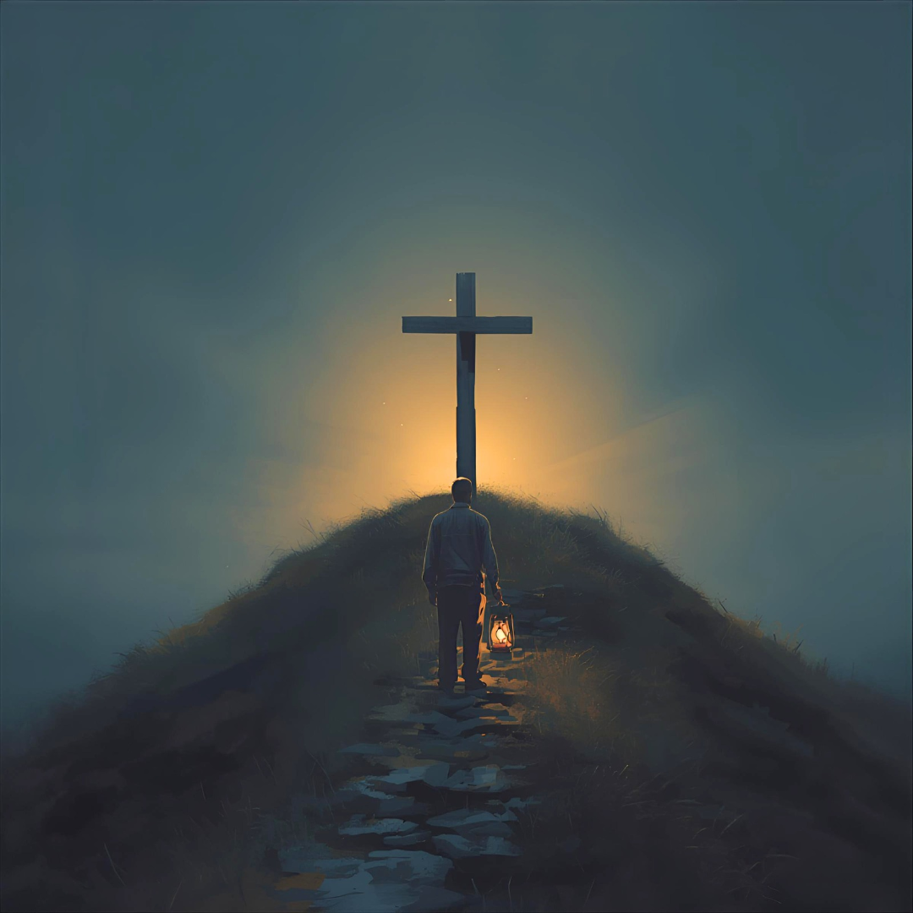
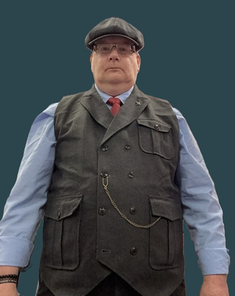

John 3:16
"For God so loved the world, that he gave his only Son, that whoever believes in him should not perish but have eternal life."

"Again Jesus spoke to them, saying, 'I am the light of the world. Whoever follows me will not walk in darkness, but will have the light of life.'" — John 8:12
Scripture shows us that God's love is unconditional, sacrificial, and the very core of who He is.
"For God so loved the world, that he gave his only Son, that whoever believes in him should not perish but have eternal life."
"But God shows his love for us in that while we were still sinners, Christ died for us."
"Anyone who does not love does not know God, because God is love."
"In this the love of God was made manifest among us, that God sent his only Son into the world, so that we might live through him. In this is love, not that we have loved God but that he loved us and sent his Son to be the propitiation for our sins."
"But God, being rich in mercy, because of the great love with which he loved us, raised us up with him and made us sit with him in the heavenly places, in Christ Jesus."
"For I am convinced that neither death nor life, neither angels nor demons, neither the present nor the future, nor any powers, neither height nor depth, nor anything else in all creation, will be able to separate us from the love of God that is in Christ Jesus our Lord."
For it is by grace you have been saved, through faith—and this is not from yourselves, it is the gift of God—not by works, so that no one can boast. For we are God’s handiwork, created in Christ Jesus to do good works, which God prepared in advance for us to do.
— Ephesians 2:8-10
Prayer for Salvation:
Lord Jesus, I come to You today, acknowledging that I am a sinner in need of salvation. I believe that You died for my sins and rose again, offering me the gift of eternal life. I repent of my sins and place my faith in You alone for salvation. Thank You for Your grace and mercy. Help me to live a life that honors You. AMEN.

September 5, 2024 I was diagnosed with stage 4 prostate cancer. I started hormone suppression therapy that month and chemotherapy in November. My last round of chemo was in April of 2025. After multiple PSMA PET/CT Scans, Zometa infusions, a total of 4 rounds of hormone suppression therapy, and 6 rounds of chemo... My body was weak, my mental state was shattered, and I was angry with the world. The doctors felt I had 5 years left at best.But God had other plans for me. There were people who were praying for me that I was not aware of. But I could feel God calling to me. November 2025, my best friend invited me to go to church with him. Now I hadn't been to this church in 22 years, I had turned my back on God and ended up down a really dark path. But God kept nudging me and I gave in. What did I have to lose at this point? The third sunday I was there changed my life forever. God broke through the pain, fear, and anger. He reached his hand into the darkness and embraced me. I fell to my knees and cried. That day I re-dedicated my life to Christ. If I was going to die, I was going to get right with my Lord and Savior. And if my story ended here, it would be enough. But it doesn't, when God has a purpose for you, there are no endings until He says so.
Now I was read to face my end, and I prayed to face death with a grace and courage that would glorify God. During my last PSMA PET/CT Scan, I felt a hand reach inside of me and pull the cancer out mid scan. A week later, at a follow-up appointment with my oncologist, I was told that the cancer was undetectable. And here I am now, sharing with you that God's grace and mercy are greater than any sin or shame we may have committed.